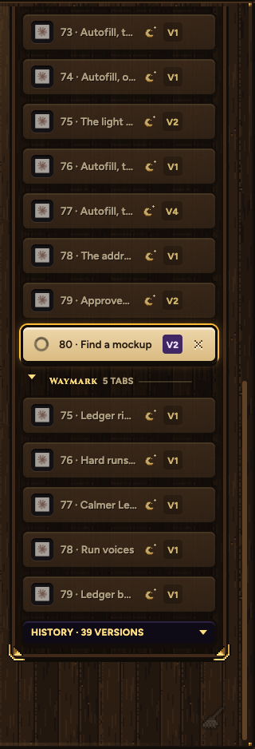
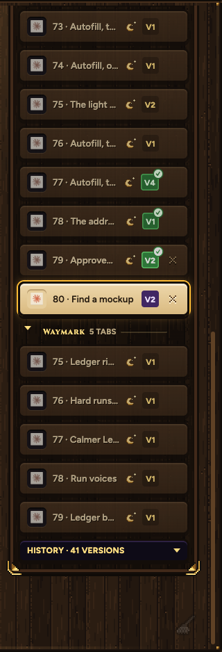
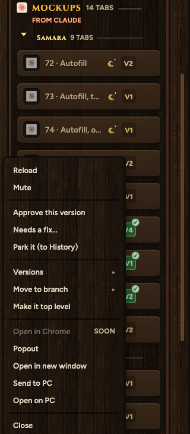
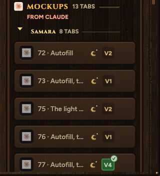

Your real tab list, with the change running. Built stays in the list (your gallery), its V chip green with a tick; approved would be gold, needs-a-fix orange. Right-click a mockup tab to mark it. Parked leaves for History, and comes back if you take the mark off.

Today. 77, 78 and 79 are built, but you can't tell.

With it. Their V chips are green with a tick. Nothing else moves.

Right-click a mockup tab. Approve, Needs a fix (you type it in place), Park it, in the menu you already have.

Parked 74. It left the list (Samara 9 tabs became 8) and waits in History.